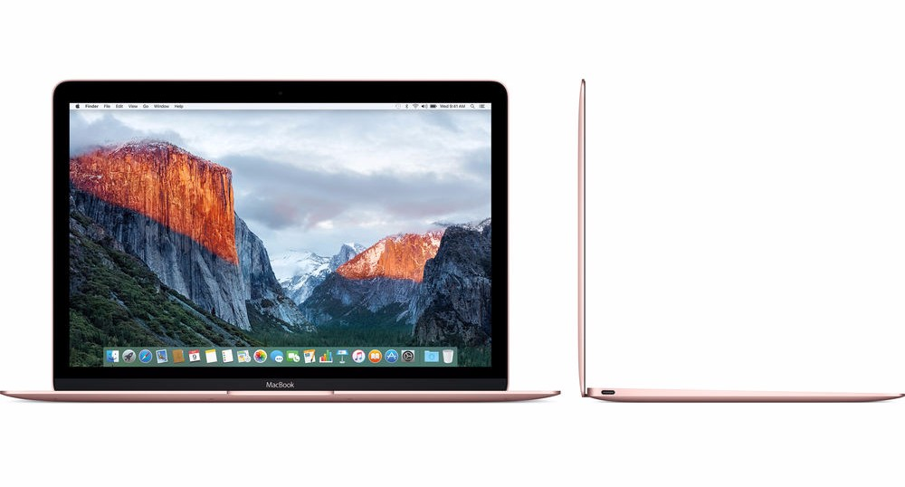

De nieuwe iMac Pro beschikt over een nieuwe chip. iMac Pro heeft dus een compleet nieuwe GPU. Deze GPU is meer dan drie keer zo snel als alle vorige iMac-GPU's. Hierdoor zijn hogere frame‑rates mogelijk voor VR, net als realtime 3D‑rendering, meer levensechte speciale effecten en gamen op z’n best.
MacBook Pro
In plaats van de functietoetsen vind je bovenaan je toetsenbord nu de veelzijdige Touch Bar, die ongekende mogelijkheden biedt. Hij laat relevante tools zien waarmee je waarschijlijk al bekend bent. Regelaars om het volume en de helderheid aan te passen bijvoorbeeld, maar ook interactieve manieren om door content te bladeren en intelligente typfuncties als emoji. En Touch ID is nu beschikbaar op de Mac. Daarmee kun je razendsnel overal inloggen, waar je ook bent.
MacBook
Extreem licht

Apple heeft geprobeerd de dunste en lichste MacBook te maken, en dat is ze aardig gelukt. De nieuwe MacBook is niet alleen compact maar ook krachtiger dan ooit. Hij is tot 20 procent sneller dan de vorige MacBook en heeft tot 50 procent snellere SSD-opslag.